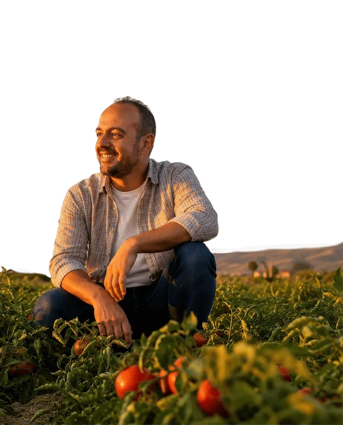
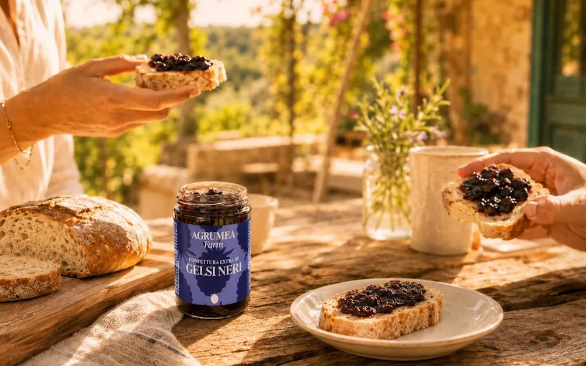
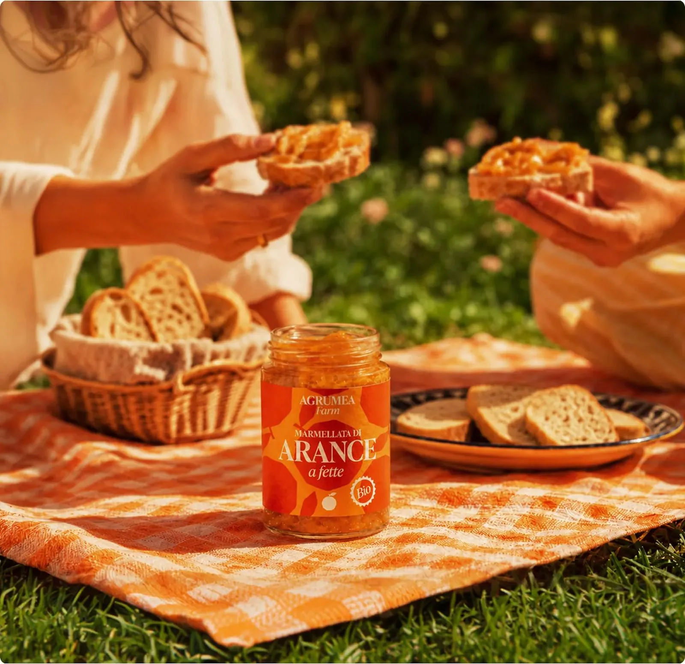

1968
The first grove
Our grandfather buys a citrus grove near Floridia. A family livelihood begins, rooted in the rhythms of the trees.
Our story · Since 1968
Our story is rooted in Floridia, a few kilometres from Syracuse, where our grandfather bought his first citrus grove. He saw in those trees a heritage of aromas and flavours worth protecting.
Today that inheritance is in our hands. We tend each plant, harvest by hand, and make the jars ourselves — with the same love, and a little more science.


A working inheritance
In 2018 a new generation joined the farm, bringing degrees in agriculture and food technology. We converted the whole farm to organic practice, introduced precision irrigation to reduce waste, planted pistachio and almond groves, and installed photovoltaic panels.
We also built our own kitchen and closed the supply chain. The fruit we grow is the fruit we cook. The person who picks it is often the person who seals the jar.
Three generations
1968
Our grandfather buys a citrus grove near Floridia. A family livelihood begins, rooted in the rhythms of the trees.
2018
We convert to organic farming, install solar power and precision irrigation, and build our own processing kitchen.
Today
Ten jars, two dried fruits, one pantry. Grown, picked, cooked and packed on the same land, by the same family.
What we stand for
01
No synthetic pesticides or fertilisers. The soil is the asset we are protecting.
02
Our own kitchen, our own fruit, our own jars. Fewer miles and more control.
03
Automated irrigation delivers water only where and when the plants need it.
04
Photovoltaic panels cover the farm's energy needs, from irrigation to the kitchen.

“We are not selling a jar. We are asking you to taste a place.”Agrumea Farm · Floridia
Come and see
Walk the rows, pick an orange, and see where the jars begin. We host small groups by appointment throughout the citrus season.
Visit the grove